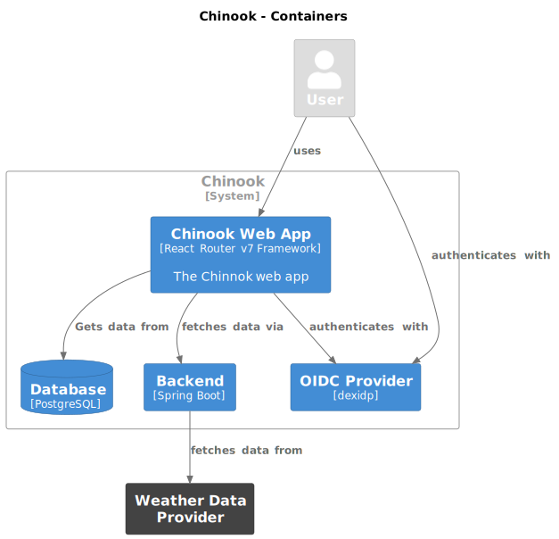

Template Table of Contents 1. Introduction and Goals 1.1. Requirements Overview 1.2. Quality Goals 1.3. Stakeholders 2. Architecture Constraints 3. Context and Scope 3.1. Business Context 3.2. Technical Context 4. Solution Strategy 5. Building Block View 5.1. Whitebox Overall System 5.2. Level 2 6. Runtime View 6.1. <Runtime Scenario 1> 6.2. <Runtime Scenario 2> 6.3. … 6.4. <Runtime Scenario n> 7. Deployment View 7.1. Infrastructure Level 1 7.2. Infrastructure Level 2 8. Cross-cutting Concepts 8.1. <Concept 1> 8.2. <Concept 2> 8.3. <Concept n> 9. Architecture Decisions 10. Quality Requirements 10.1. Quality Tree 10.2. Quality Scenarios 11. Risks and Technical Debts 12. Glossary About arc42 arc42, the template for documentation of software and system architecture. Template Version 8.2 EN. (based upon AsciiDoc version), January 2023 Created, maintained and © by Dr. Peter Hruschka, Dr. Gernot Starke and contributors. See https://arc42.org. 1. Introduction and Goals This is a starter template for React Router based applications. It should address the needs of a smaller web-app that features a lot of create-read-update-delete type applications. 1.1. Requirements Overview The main requirements are provide consistent and easy form handling support strong table handling provide authentication mechansims based on OIDC provide role-base-access-control (RBAC) for authorization provide database schema management expose a business API fetch external data via a REST API provide internationalization of the UI provide guidelines to integrate with Java Backends integrate a documentation system 1.2. Quality Goals provide concepts that (Java) backend developers can relate to provide full type safety inversion of control separation of concerns provide good practices 1.3. Stakeholders Role/Name Expectations Developer Ability to have a template to start coding Solution Architect Template that provides good guidelines for implementing CRUD applications 2. Architecture Constraints Constraint Explanation Fullstack Typescript We want to minimize the changing of ecosystems for creating a simple web-app Spring Boot for Backend for integration requirements Familiarity with the Java / Spring Boot Ecosystem 3. Context and Scope 3.1. Business Context <Diagram or Table> <optionally: Explanation of external domain interfaces> 3.2. Technical Context <Diagram or Table> <optionally: Explanation of technical interfaces> <Mapping Input/Output to Channels> 4. Solution Strategy 5. Building Block View 5.1. Whitebox Overall System  This shows the basic interaction patterns between the user, the application and different parts. Name Responsibility <black box 1> <Text> <black box 2> <Text> 5.2. Level 2 6. Runtime View 6.1. <Runtime Scenario 1> <insert runtime diagram or textual description of the scenario> <insert description of the notable aspects of the interactions between the building block instances depicted in this diagram.> 6.2. <Runtime Scenario 2> 6.3. … 6.4. <Runtime Scenario n> 7. Deployment View 7.1. Infrastructure Level 1 <Overview Diagram> Motivation <explanation in text form> Quality and/or Performance Features <explanation in text form> Mapping of Building Blocks to Infrastructure <description of the mapping> 7.2. Infrastructure Level 2 7.2.1. <Infrastructure Element 1> <diagram + explanation> 7.2.2. <Infrastructure Element 2> <diagram + explanation> … 7.2.3. <Infrastructure Element n> <diagram + explanation> 8. Cross-cutting Concepts 8.1. <Concept 1> <explanation> 8.2. <Concept 2> <explanation> … 8.3. <Concept n> <explanation> 9. Architecture Decisions 10. Quality Requirements 10.1. Quality Tree 10.2. Quality Scenarios 11. Risks and Technical Debts 12. Glossary Term Definition <Term-1> <definition-1> <Term-2> <definition-2>